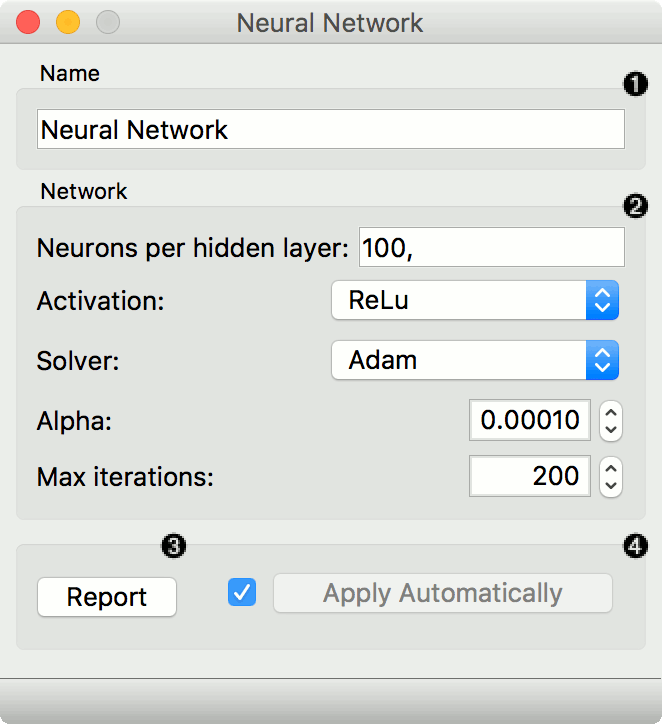
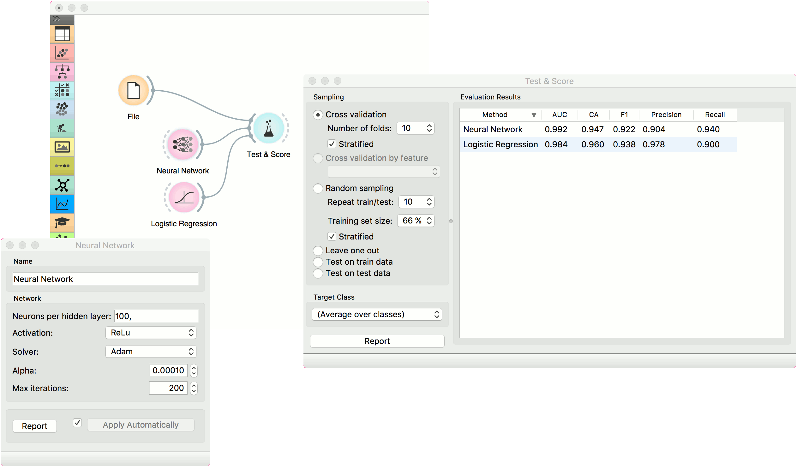
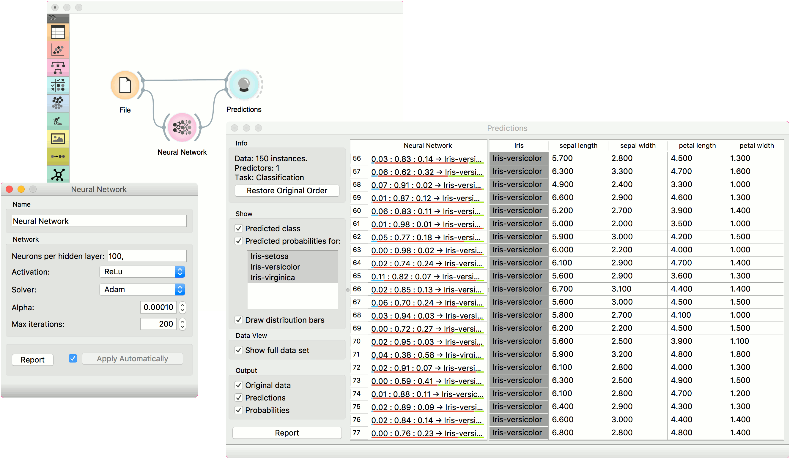

Neural Network
A multi-layer perceptron (MLP) algorithm with backpropagation.
Inputs
- Data: input dataset
- Preprocessor: preprocessing method(s)
Outputs
- Learner: multi-layer perceptron learning algorithm
- Model: trained model
The Neural Network widget uses sklearn’s Multi-layer Perceptron algorithm that can learn non-linear models as well as linear.

A name under which it will appear in other widgets. The default name is “Neural Network”.
Set model parameters:
- Neurons per hidden layer: defined as the ith element represents the number of neurons in the ith hidden layer. E.g. a neural network with 3 layers can be defined as 2, 3, 2.
- Activation function for the hidden layer:
- Identity: no-op activation, useful to implement linear bottleneck
- Logistic: the logistic sigmoid function
- tanh: the hyperbolic tan function
- ReLu: the rectified linear unit function
- Solver for weight optimization:
- L-BFGS-B: an optimizer in the family of quasi-Newton methods
- SGD: stochastic gradient descent
- Adam: stochastic gradient-based optimizer
- Alpha: L2 penalty (regularization term) parameter
- Max iterations: maximum number of iterations
Other parameters are set to sklearn’s defaults.
Produce a report.
When the box is ticked (Apply Automatically), the widget will communicate changes automatically. Alternatively, click Apply.
Preprocessing
Neural Network uses default preprocessing when no other preprocessors are given. It executes them in the following order:
- removes instances with unknown target values
- continuizes categorical variables (with one-hot-encoding)
- removes empty columns
- imputes missing values with mean values
- normalizes the data by centering to mean and scaling to standard deviation of 1
To remove default preprocessing, connect an empty Preprocess widget to the learner.
Examples
The first example is a classification task on iris dataset. We compare the results of Neural Network with the Logistic Regression.

The second example is a prediction task, still using the iris data. This workflow shows how to use the Learner output. We input the Neural Network prediction model into Predictions and observe the predicted values.
